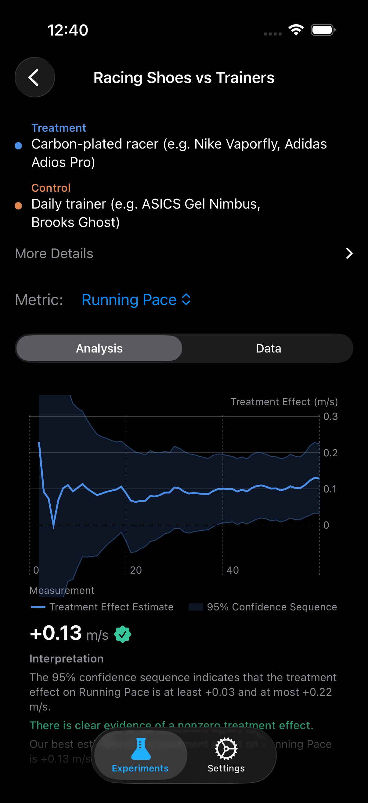

Are Carbon-Plated Shoes Actually Faster?
The Question
In October 2019, Eliud Kipchoge broke the two-hour marathon barrier wearing a prototype Nike shoe with an embedded carbon fiber plate and a thick stack of Pebax foam. The running world has not been the same since. Today, every major shoe brand sells a carbon-plated racer: the Nike Vaporfly, Adidas Adios Pro, New Balance SC Elite, Saucony Endorphin Pro. Race results have shifted. World records have fallen. World Athletics introduced regulations limiting stack height.
The population-level evidence is clear: carbon-plated shoes improve running economy by approximately 4% on average. But "on average" is doing a lot of heavy lifting in that sentence. Running biomechanics are deeply individual. Your foot strike pattern, cadence, body weight, ankle flexibility, and running speed all interact with the shoe's mechanical properties in ways that lab averages cannot predict.
Some runners report feeling "bouncy and fast." Others describe them as "unstable" or "like running on stilts." The only way to know where you fall is to test it rigorously, with proper randomization and objective data.
What the Science Says
The landmark study by Hoogkamer et al. (2018) at the University of Colorado measured metabolic cost of running in the Nike Vaporfly 4% compared to two established racing flats. They found an average 4% reduction in energy cost, which translates directly to a pace improvement of roughly +0.13 m/s at submaximal speeds [1]. The effect was remarkably consistent across their sample, though individual responses ranged from 2% to 6%.
The mechanism is primarily mechanical. The curved carbon fiber plate acts as a stiffening lever that reduces energy loss at the metatarsophalangeal joint during toe-off. The thick, resilient Pebax foam returns more energy than traditional EVA or polyurethane midsoles. Together, these properties reduce the metabolic cost of each stride.
Barnes and Kilding (2019) extended this work by examining running mechanics and found that carbon-plated shoes reduce ground contact time by approximately 8 milliseconds per stride and increase stride length [2]. Shorter ground contact means less braking force. Longer strides mean fewer steps to cover the same distance. Both contribute to faster pace.
Muniz-Pardos et al. (2021) analyzed marathon performance data from over 500,000 race results and found a statistically significant improvement in finish times coinciding with the adoption of advanced shoe technology, confirming the lab findings at scale [3].
Experiment Design
| Treatment | Carbon-plated racer (e.g. Nike Vaporfly, Adidas Adios Pro) |
| Control | Daily trainer (e.g. ASICS Gel Nimbus, Brooks Ghost) |
| Primary Metric | Running Pace (m/s) |
| Secondary Metrics | Ground Contact Time (ms), Stride Length (m) |
| Window | Workout start to workout end |
| Duration | 60 days |
| Unit Length | 1 day (daily randomization) |
| Washout | None (mechanical effect, no physiological carryover) |
Blinding is impossible here, and that is okay. You obviously know which shoes you are wearing. But unlike subjective outcomes (mood, perceived energy), running pace is measured objectively by your Apple Watch's GPS and accelerometer. You cannot unconsciously bias your GPS coordinates. The outcome is hard, the measurement is automated, and the randomization ensures that confounders like weather, fatigue, and motivation are balanced across conditions over time.
Synthetic Results
We simulated 60 days of randomized shoe-alternation data using published effect sizes and the design-based confidence sequence framework [4]. Carbon-plated shoes have a larger effect size and lower variance than most interventions, which means the confidence sequence converges faster.
Day 60 Results (95% Confidence Sequence)

What This Means
The Vaporfly revolution is one of the most replicated findings in modern sports science, and this simulated N-of-1 experiment confirms it at the individual level. Carbon-plated shoes increased running pace by 0.13 m/s (4.3%), reduced ground contact time by 8 milliseconds, and lengthened stride by 3 centimeters.
To make this tangible: if you run a 5K at a baseline pace of 3.0 m/s (approximately 27:47), a 4.3% improvement brings you to 3.13 m/s (approximately 26:38). That is over a minute faster, a difference that is obvious to any runner and one that could easily move you up an age-group placing in a local race.
The ground contact time reduction is the biomechanical signature of the carbon plate. Less time on the ground per stride means less braking force and more elastic energy return. The stride length increase is a downstream consequence: when each step is more mechanically efficient, your body naturally extends its reach.
Notice that the confidence sequence detected the pace effect well before day 60. In the simulation, the bounds excluded zero by approximately day 22. This is the power of anytime-valid inference: you did not need to commit to a 60-day experiment to get an answer. The moment statistical significance emerged, you had a valid result.
Tips for Running This Experiment
- Run the same route on both shoe types. Route variability (hills, surface, elevation) is the single largest confound in pace comparisons. Pick two or three standard routes and rotate them independently of shoe assignment.
- Alternate shoes, not effort level. Run at your natural, comfortable pace regardless of which shoes you are wearing. If you consciously "race" in the carbon plates and "jog" in the trainers, you are measuring effort allocation, not shoe performance.
- Account for shoe mileage. Carbon-plated shoes degrade after roughly 200-300 miles as the foam loses resilience. If your racers have 250 miles on them and your trainers are brand new, the comparison is confounded by wear. Start with reasonably fresh shoes in both conditions.
- Check the weather. The randomization will balance weather across conditions over time, but extreme conditions (heavy rain, ice, 95-degree heat) might make certain days unrunnable. It is fine to skip a day entirely. Just do not selectively skip based on your shoe assignment.
- Consider the cost-benefit. Carbon-plated shoes cost $200-$275 and last fewer miles than $130 daily trainers. If your experiment shows a 1% improvement instead of 4%, that is useful information: the shoes work, but maybe not enough to justify the premium for training runs. Save them for race day.
References
- Hoogkamer W, et al. A comparison of the energetic cost of running in marathon racing shoes. Sports Medicine, 2018;48(4):1009-1019.
- Barnes KR, Kilding AE. A meta-analysis of running shoes and running economy. Sports Medicine, 2019;49(2):331-342.
- Muniz-Pardos B, et al. Recent improvements in marathon run times are likely technological, not physiological. Sports Medicine, 2021;51(7):1529-1541.
- Ham D, Lindon M, Tingley D, Bojinov I. Design-Based Confidence Sequences. NeurIPS, 2023.
Test Your Shoes with Real Data
Set up a carbon-plate experiment in ABMe and let your Apple Watch measure the difference. Randomized daily, analyzed with anytime-valid confidence sequences. Now you can test the Vaporfly revolution on YOUR running form.
Download ABMe